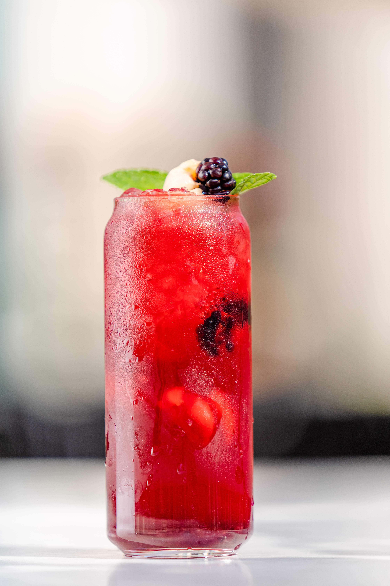
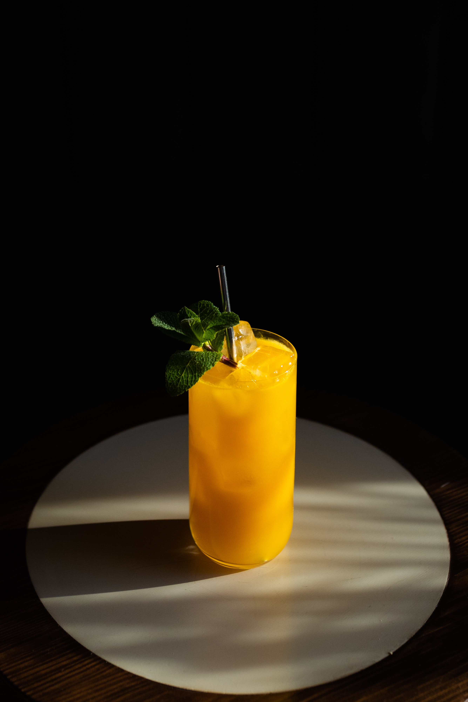

Bramble
Ingredients
- 5cl gin
- 2cl blackberry liqueur
- 3cl lemon juice
- 2cl syrup
- 1 blackberry
Making Of
- Pour gin, lemon juice and syrup in a shaker
- Fill the shaker with ice and shake until cold
- Fill a glass with crushed ice and strain the drink
- Top it off with blackberry liqueur
- Garnish with blackberry and lemon wedge

Caipirhina
Ingredients
- 4-6cl cachaca
- 0.5-1 lime
- 1.5-2cl sugar
Making Of
- Cut off the ends of the limes and half it lenghtwise
- Take away the white part on the lime
- Cut every half in four and put preferred amount into a glas
- Add sugar and muddle the sugar with the lime
- Fill the glass with ice, add cachaca and stir

Ibiza43
Ingredients
- 5cl licor43
- 12cl pineapple juice
- 2cl lime juice
Making Of
- Fill a glass with ice (preferrably crushed)
- Add all of the ingredients and stir
- Garnish with pineapple

Strawberry Mojito
Ingredients
- 4cl white rum
- 3cl lime juice
- 3cl syrup
- 4cl soda
- mint
- strawberries
Making Of
- Muddle 2-3 strawberries in a high-ball glass
- Add lime juice and syrup
- Take a bundle of mint and put in the glass, carefully tap with a muddle
- Pour in rum and fill a little more than half the glass with ice and stir
- Add soda and fill the rest up with ice
- Garnish with mint and strawberries

Irish Coffee
Ingredients
- 3cl irish whiskey
- 1-2tsp sugar
- 9cl coffee
- 5cl cream
Making Of
- Add sugar, whiskey and coffee (leave about 1-1.5cm of the glass for the cream)
- Stir until the sugar has dissolved
- With a spoon, add the cream on top
- Garnish with nutmeg or grated chocolate
Tip: Heat the glass with hot water beforhand.

Kaffe Karlsson
Ingredients
- 3cl baileys
- 3cl orange liqueur (triple sec)
- 15cl coffee
- cream
Making Of
- Pour baileys and orange liqueur in a glas
- Add the coffee, leave a few cm for cream
- With a spoon, add the lightly whipped cream on top
- Garnish with chocolate